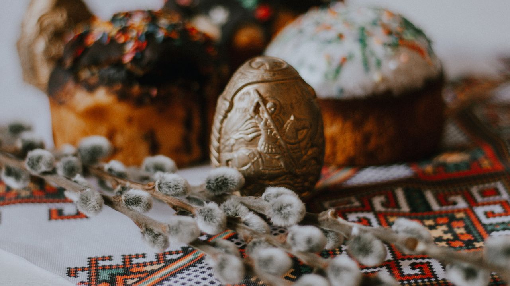
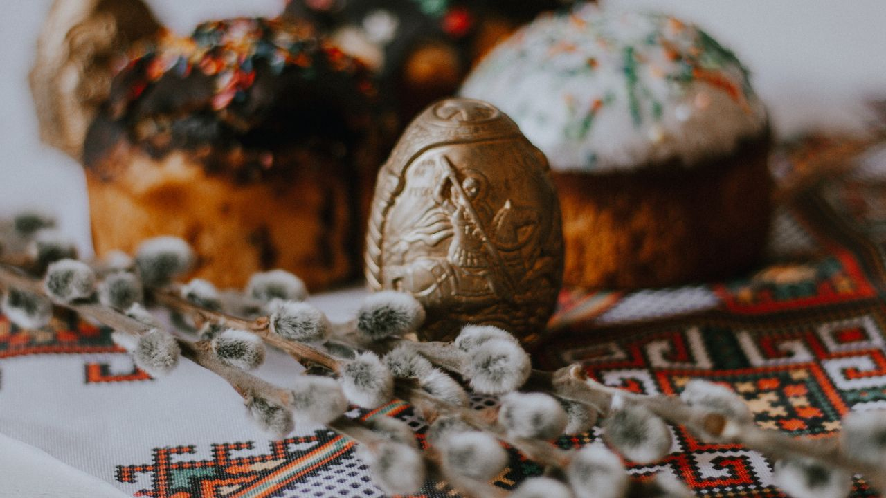

Bine ai venit!
Explorează frumusețea și semnificația sărbătorii de Paște prin tradiții și mâncăruri specifice. Acest site îți oferă o privire asupra celor mai importante obiceiuri și preparate din această perioadă specială a anului.
Explorează frumusețea și semnificația sărbătorii de Paște prin tradiții și mâncăruri specifice. Acest site îți oferă o privire asupra celor mai importante obiceiuri și preparate din această perioadă specială a anului.
